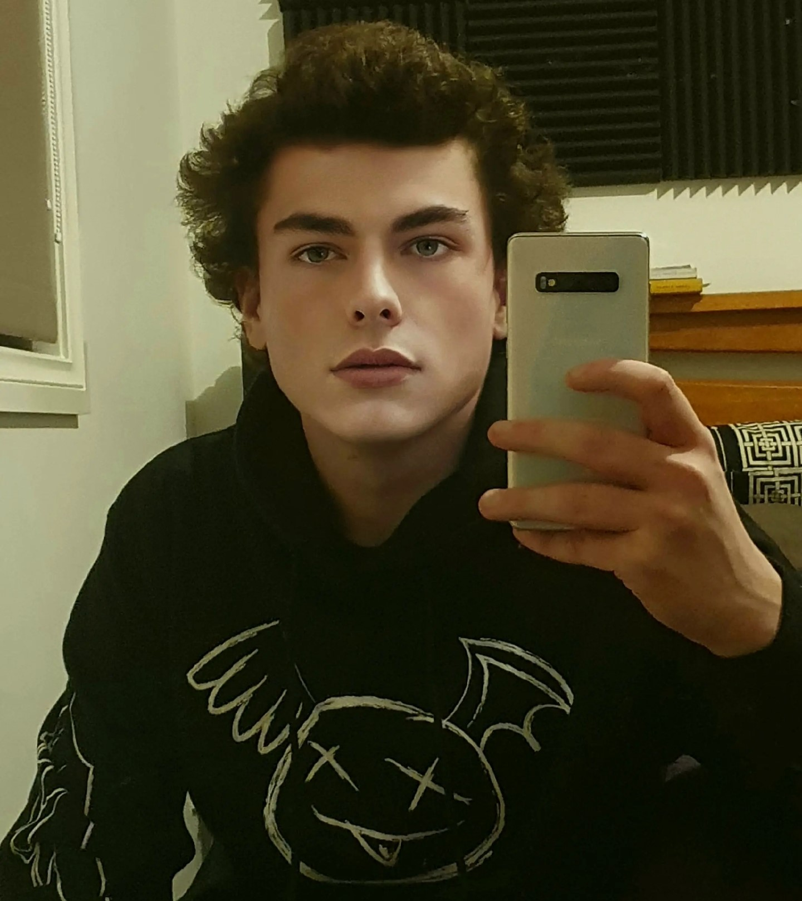

Blake Andrews as pictured above.
Hi! I'm Blake Andrews! I'm the game director for Goose McCain! A lot of the things I do often revolve around film and game design. I love to make short films, and even have a knack for photography! Most of my knowledge of the game's industry stems from a course I did during high school, and own personal accomplishments. A couple of my favourite films are The Lighthouse and Eternal Sunshine, and a couple of my favourite games are Minecraft and Red Dead 2. Main updates and announcements will be done from this site so please feel free to stick around!
Buisness email is blorganindustries@hotmail.com